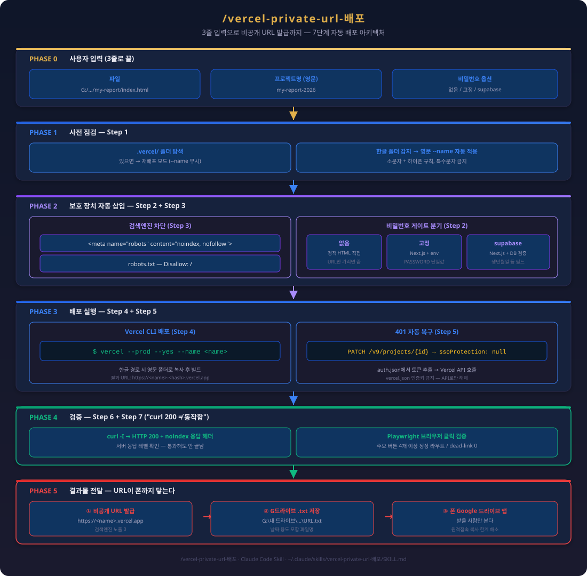

한 줄 정의
공유할 결과물을 단일 HTML로 모아 vercel --prod --yes --name <영문> 한 줄로 띄워, URL 아는 사람만 접근 가능하고 검색엔진에는 노출되지 않게 즉시 배포하는 본인 표준 공유 채널.
왜 이 노하우가 중요한가
GitHub Pages는 공개 인덱싱이 기본이다. 본인 자료(특허 초안·고객 제안서·강의 슬라이드)는 "받을 사람만 본다" 가 원칙인데 검색에 뜨면 곤란하다. Vercel은 noindex 메타 + Disallow robots.txt 조합으로 검색엔진 차단이 깔끔하고, 한글 폴더명 프로젝트도 --name 영문 지정으로 우회된다. 4,000시간 운용 중 "보내야 할 자료가 즉시 URL 한 줄로 나간다" 가 가장 잦은 요구였고, #6 미니 풀스택 5시간·#25 챗봇·#9 유튜브 자동화의 결과물도 결국 이 채널로 외부에 닿는다. "curl 200 ≠ 동작함" 헌법에 따라 배포 후엔 반드시 브라우저로 주요 버튼·링크를 클릭 검증한다.
핵심 개념

vercel-private-url-배포 스킬의 핵심 흐름:
| 단계 | 동작 |
|---|---|
| 1 | .vercel/ 탐색 — 기존 배포 발견 시 재배포만 |
| 2 | noindex 메타 + robots.txt Disallow 자동 삽입 |
| 3 | 한글 폴더 → --name 영문 프로젝트명 |
| 4 | vercel --prod --yes --name <name> |
| 5 | 401 떴으면 API로 ssoProtection: null PATCH |
| 6 | 재배포 → curl -I 200 확인 |
| 7 | 브라우저 클릭 검증("curl 200 ≠ 동작함" 원칙) |
비밀번호 옵션 3종: 없음 / 고정(env PASSWORD) / supabase(생년월일 등 DB 필드 검증). 후자 둘은 Next.js 앱이 자동 스캐폴딩되며, 한글 경로 빌드 오류 회피를 위해 영문 경로로 복사 후 빌드한다.
실전 사용법
호출 한 줄:
/vercel-private-url-배포
파일: <클라우드 동기화 폴더>/.../my-report/index.html
프로젝트명: my-report-2026
비밀번호: 없음
본인 표준 절차:
1단계 — 결과물을 단일 HTML로 합친다(이미지·CSS 인라인 권장).
2단계 — <head> 직후에 <meta name="robots" content="noindex, nofollow"> 확인.
3단계 — 한글 폴더면 영문 프로젝트명 지정. 규칙: 소문자+하이픈, 특수문자 금지.
4단계 — vercel --prod --yes --name <name> 실행. 401이면 auth.json에서 토큰 추출해 API로 보호 해제 PATCH:
curl -s -X PATCH "https://api.vercel.com/v9/projects/${PROJECT_ID}?teamId=${TEAM_ID}" \
-H "Authorization: Bearer ${TOKEN}" \
-d '{"ssoProtection":null,"passwordProtection":null}'
5단계 — curl -I 200 확인 → 브라우저로 클릭 검증(데드 링크·<div> 클릭 함정).
6단계 — URL을 클라우드 동기화 폴더(Google 드라이브/OneDrive 등)에 .txt로 저장(글로벌 헌법: 모바일 원격접속 시 폰 동기화 앱으로 즉시 확인).
검증 KPI: HTTP 200 ✓ + noindex 응답 헤더 ✓ + 주요 버튼 4개 이상 올바른 라우트 ✓ + 검색엔진 노출 0.
자주 만나는 함정 — .vercel/project.json이 있으면 --name 무시. 새 이름 쓰려면 rm -rf .vercel/. vercel.json에 vercelAuthentication 키 넣으면 오류, 인증 해제는 API로만.
관련 항목
- #6 미니 풀스택 5시간 — 배포 채널의 주 사용처
- #25 지능형 챗봇 — 챗봇 결과물 외부 공유
- #32 CLAUDE.md 활용 — 배포 규칙 박아두기
- #49 스크린샷 자율 검증 — 배포 후 클릭 검증 자동화
- #13 --dangerously-skip-permissions —
--yes와 동일 사상의 자동화 가속